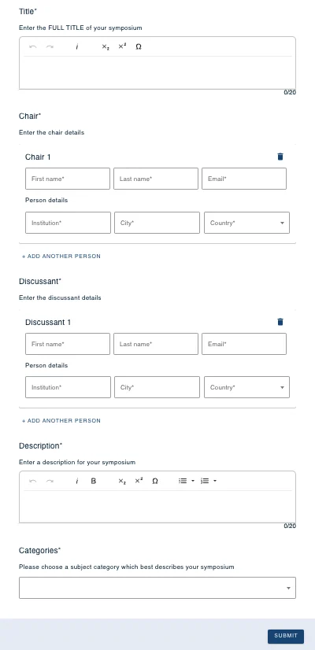
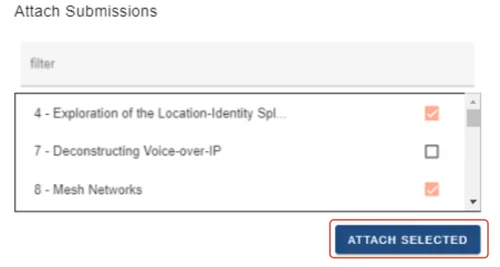
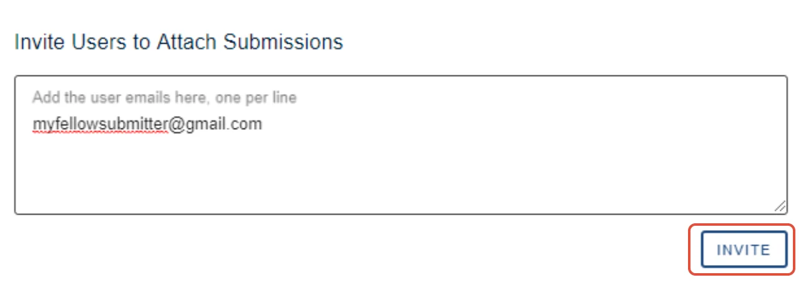
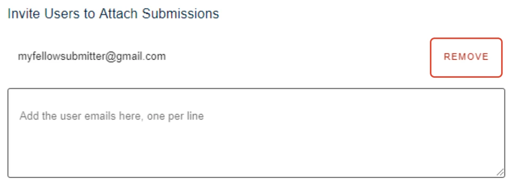
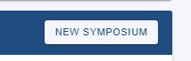

Submit a Symposium
For people making a submissionOrganising the event?
#
#
Skip to Attaching abstracts to a symposium
Follow the link provided by the Event Administrator to submit a symposium.
Complete the questions in the form, note that mandatory questions are denoted with a * then click Submitwhen complete.

Attaching submissions to a symposium
In the Attach Submissions area you will see a list of submissions that are available to be attached to your symposium. Click the checkbox to the right of the submission you wish to attach then click ATTACH SELECTED.

You can also submit your own abstract to your symposium by clicking the button below.
Inviting submitters to submit to your symposium
Any submitter can submit to a public symposium event. If the event organisers have set the symposia submissions for the event as private and you want other submitters to be able to submit to your symposium, you must invite them.
When creating or editing your symposium, enter the email addresses of those you wish to invite in the box shown below then click INVITE.

Removing invited submitters
You can remove invited submitters from the list by clicking theREMOVE button next to their email address.

Creating additional symposia
Additional symposia can be created by clicking on the New Symposium button in the event listing in your personal dashboard.

Should you require any further assistance, please contact our support desk via our Contact Form.

Did this page solve it?
Thanks — this helps us fix it.